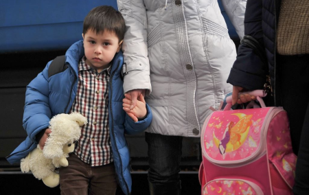

Усиновлення та тимчасове влаштування дитини
Багато діточок залишилися без рідних. Тому, якщо у вас є можливість, ви можете допомогти дитині отримати нову сім’ю.
Усиновлення
В умовах воєнного стану процедура усиновлення не змінюється і не спрощується.
Кого можна усиновити?
Дітей, які перебувають на обліку як:
- діти-сироти;
- діти, позбавлені батьківського піклування;
- діти, батьки яких дали письмову згоду на усиновлення, завірену нотаріусом.
АЛЕ: діти, які стали сиротами через війну, ще не перебувають на обліку з усиновлення. Тому розпочати процедуру поки що неможливо.
НЕ можна усиновити дитину, якщо:
- є шанс возз'єднатися із сім'єю;
- не пройшов необхідний час ( приблизно 2 роки), аби зробити все можливе для розшуку батьків чи родичів, що вижили.
Хто може бути усиновлювачем?
Усиновлювачем може бути:
- особа, яка досягла 21 року (виняток, якщо усиновлювач – родич дитини);
- особа, старша за дитину, не менше ніж на 15 років. Для усиновлення повнолітньої особи, різниця у віці має бути не менше ніж 19 років;
- подружжя, а також особи, які не перебувають у шлюбі.
Переважне право на усиновлення мають родичі дитини.
Яким є необхідний пакет документів?
Для усиновлення необхідні наступні документи:
- заява про взяття на облік як кандидатів в усиновлювачі;
- копія паспорта або іншого документа, що посвідчує особу;
- засвідчена податковою довідка про заробітну плату за останні 6 місяців або копія декларації про доходи за попередній календарний рік;
- копія свідоцтва про шлюб (якщо заявники перебувають у шлюбі);
- висновок про стан здоров'я кожного заявника;
- нотаріально засвідчена письмова згода другого з подружжя на усиновлення дитини (у разі усиновлення дитини одним з подружжя);
- довідка про наявність чи відсутність судимості для кожного заявника, видана територіальним центром з надання сервісних послуг МВС;
- копія документів, що підтверджують право власності або користування житловим приміщенням;
- довідка про проходження курсу підготовки з питань виховання дітей-сиріт і дітей, позбавлених батьківського піклування.
Зазвичай підготовка усіх документів займає кілька місяців. В умовах війни цей процес може бути довшим.
Чи є можливість усиновлення громадянами України, що проживають закордоном, або іноземними громадянами?
НІ. Через неможливість забезпечити законність та безпеку дітей, а також якісну перевірку документів.
Чи можна всиновити дитину, евакуйовану до іншої держави?
НІ. Оскільки більшість таких дітей не є сиротами або немає офіційних підтверджень цьому. Таким дітям потрібен тимчасовий догляд і надалі вони за можливості возз'єднаються з сім'єю.
За яких умов усиновлення можливе?
Усиновлення дітей, які знаходяться на території України, можливе лише:
- в регіонах, де немає бойових дій;
- в регіонах, де працюють державні органи влади;
- щодо тих дітей, чиїх батьків або родичів встановлено обставини життя.
Усиновлення реальне. Якщо ви плануєте всиновити дитину, підготуйте пакет документів, і коли ситуація стабілізується, подайте їх до служби у справах дітей.
Тимчасове влаштування дитини
Тимчасове влаштування дитини, яка залишилася без батьків чи розлучена із сім'єю, проводять за місцем її виявлення.
Як можна тимчасово прихистити дитину?
Дитину можна тимчасово влаштувати у сім'ю родичів або сусідів, друзів, знайомих, а також патронатного вихователя.
Яким є необхідний пакет документів?
Необхідний пакет документів:
- заява особи про надання згоди на тимчасове влаштування в її сім’ю дитини;
- копія паспорта або іншого документа, що посвідчує особу;
- акт обстеження умов проживання особи;
- письмова згода дитини (якщо вона може висловити свою думку);
- письмова згода всіх повнолітніх членів сім'ї про проживання дитини на одній житловій площі.
Після розгляду документів служба у справах дітей видає наказ про тимчасове влаштування дитини.
Тимчасове влаштування = усиновлення?
НІ. Тимчасове влаштування здійснюється впродовж певного періоду. Коли зникне необхідність, дитина повернеться до батьків, родичів чи відповідних органів у справах дітей.
Як здійснюється тимчасове влаштування підкинутої дитини?
Підкинуту чи знайдену дитину (включно з ознаками насильства або жорстокого поводження, розлученої із сім’єю) проводиться після надання їй потрібної медичної допомоги.
Офіс Президента спільно з ЮНІСЕФ та Мінсоцполітики створили Telegram-бот Дитина не сама – @dytyna_ne_sama_bot.
Завдяки цьому боту ви зможете сповістити державні органи, що:
- хочете прихистити дитину;
- ваша дитина загубилася;
- знайшли дитину без супроводу дорослих;
- маєте зв'язок з міжнародними організаціями, які можуть прихистити українських дітей;
- можете звернутися на гарячу лінію.